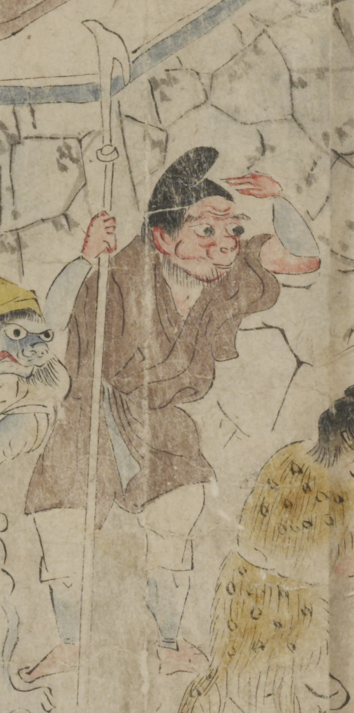

赤い肌の鬼。黒い頭巾をかぶり、額に皺が寄っている。眉毛が垂れ、目玉が大きい。口は小さく突き出て、顎にひげを生やしている。茶色の着物に、白色の股引のようなものを穿き、青色の腕抜と脚絆を付けている。右手に矛を持ち、左手を額にかかげて遠方を見やっている。
著作者：坂本弥一郎徳定／出典：親書誌：U426_nichibunken_0080：伊吹山酒呑童子絵巻；イブキヤマシュテンドウジエマキ／日付：2007／資源識別子：U426_nichibunken_0080_0001_0003
Copyright (c)2010- International Research Center for Japanese Studies, Kyoto, Japan. All rights reserved.